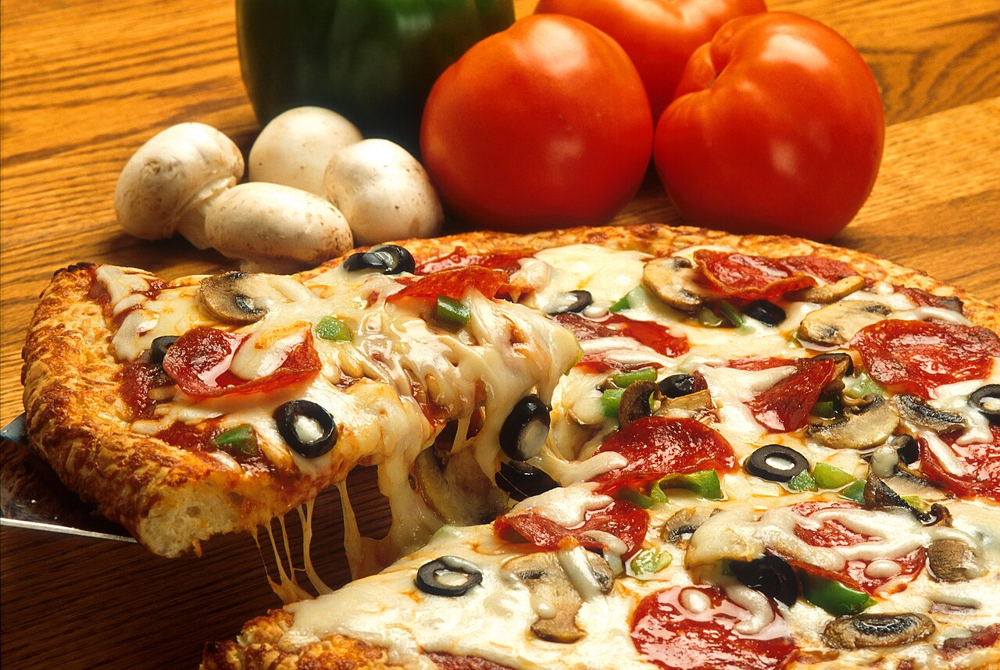

Pizza

Description
Simple, tasty and slim dish that any person (or turtle) can relate to.
Sure it's not the original way on how to do it, but it never comes bad to make Pizza that is always different.
Ingredients
- 3 cups of Flour
- 1 tablespoon of Sugar
- 1 (.25 ounce) package of actived Dry Yeast
- 1 tablespoon of Salt
- 1 cup of Warm water
- 2 tablespoons of Vegetable oil
- Tomato sauce
- And anything you wanna add as topping.
Steps
- Mix all of the none-topping ingredients in a big bowl until you have a big ball of dough.
- Spread and shake the dough until you make the form of a circle to make the pizza base.
- Add tomato sauce on top of your pizza base.
- Add any toppings you want.
- Preheat the oven and let the pizza let it cook inside for 10 to 15 minutes.
- When the cheese melts and goldens, get the pizza out of the oven and let it cool of for 2 to 5 minutes and you're done.
Home